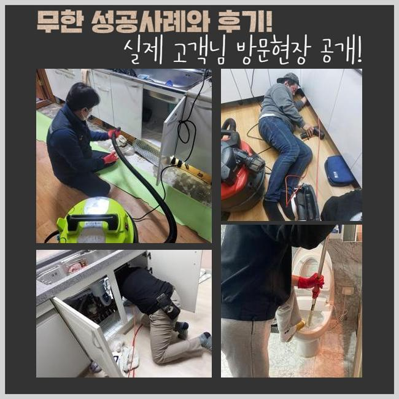
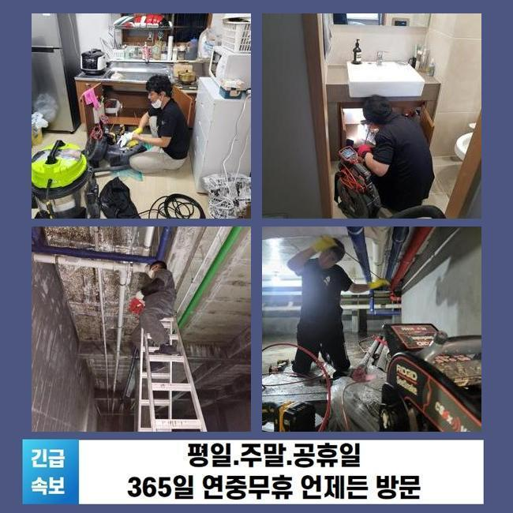
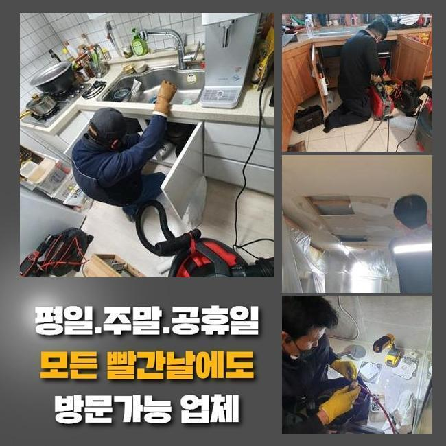
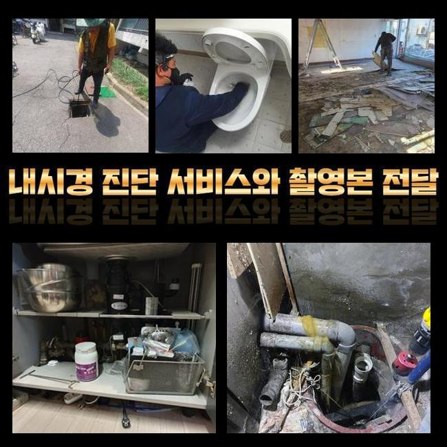
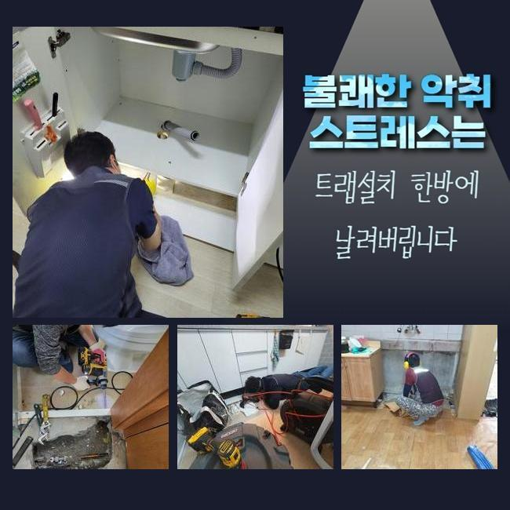
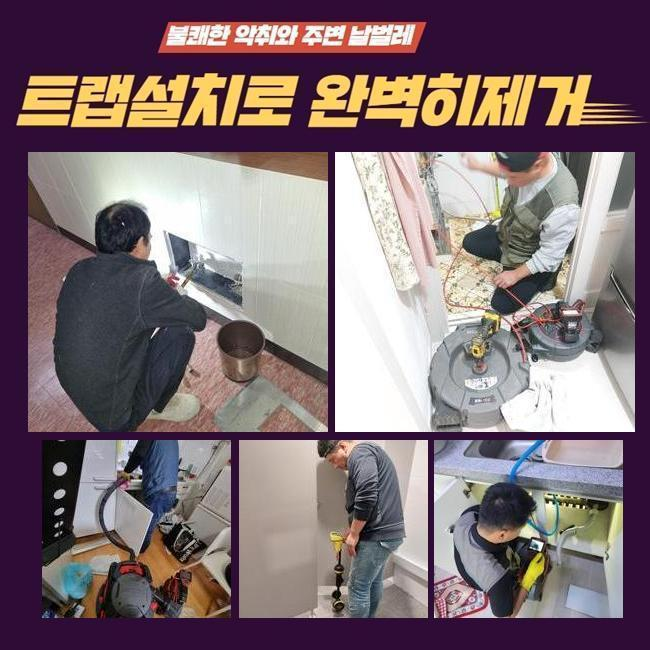

🏠 용인 죽전동싱크대배수관막힘 고기동 하수구뚫어주는곳 배관공사
용인 죽전 싱크대막힘 전문 시공 후기

📋 작업 개요
- 위치: 용인 죽전, 죽전, 용인
- 서비스 유형: 싱크대막힘, 하수구막힘, 배관막힘, 뚫는업체, 배관청소, 고압세척, 설비공사
- 작업 일시: 2025. 1. 13. 22:30
- 업체명: 하수구수사대 (010-5615-2118)
🔍 문제 상황
용인 죽전동싱크대배수관막힘 고기동 하수구뚫어주는곳 배관공사
지역 내의 식당에서 배수 성능의 불통때문에 정상영업이 불가하다고 하시며 빠른 방문이 필요하다는 신청을 받고 다녀왔습니다
레스토랑이나 식당은 하수구 설비가 고장나는 사건 때문에 당장 물을 활용하지 못하게 된다면 요리업무에 제동이 걸리다보니 개점할 수 없게 됩니다
하루 빨리 배수기능을 회복시켜야 고객님이 입을 손해를 다운시킬 수 있기 때문에 스케줄을 얼른 잡고 다녀와서 보완해드린다고 약속드렸어요
접수를 넣어주셨던 고객분은 배수구가 지장이 생긴건지 물 배출이 느릿해지고 옥외에 마련된 하수구 물이 올라오는 현상도 빚어지는 사태라고 하셨습니다
실내 가까이에 있는 바닥 배수구를 우선은 관찰한 다음 옥외배관까지 뚫어야했으므로 어려운 축에 속하는 작업이 불가피했습니다
작업에 착수하기 이전에는 현재 처한 문제점들을 두루 낱낱이 확인해보고 작업에 필요한 기간을 예측해보고 시작합니다
관로의 생김새가 독특하거나 여러곳들에 문제가 있다면 결점없이 개선하고자 한다면 시간이 더 필요할 때가 있습니다
야외에 설치된 하수구 속을 관찰해보니 겉면부터 녹이 일어나 있는 상태였고 근처의 마감재까지 더러운 오물에 휩싸여서 지저분한 상태였어요
설비나 부속품의 훼손이 최대한 없을 수 있도록 적절한 세기로 조절해서 뚫어야겠다고 다짐하고 착수하게 됐습니다

🔎 원인 분석
💡 전문가 진단: 정밀 진단 장비를 사용하여 슬러지의 고착 여부를 판명하고 타격/세척 작업을 실시했습니다.
배수로 안의 첫인상은 지저분한 오물들이 눈에 들어왔습니다
번들대는 유분기가 부유하고 있는 것을 간편히 파악할 수 있는 상태에 이르러서 노출되는 지점의 세정에 실시해서 시야를 확보해야 했습니다
처음에는 주방 설비부터 통로를 형성해준 이후에 배관을 보는 내시경기를 진입시켜서 관측을 시작합니다
안팎의 배관들이 연결되어 있는 생김새를 세부적으로 알아낸 다음 고압세척기의 파워로 여기저기에 때처럼 껴있는 슬러지부터 떼기로 단계를 구상했습니다
이렇게 흐릿하다면 카메라를 넣어봤자 어떤 것도 식별하는게 곤란할 것 같아서 안에 고인 물을 빼내는 석션 작업을 우선실시해야 했어요
강하게 흡입하는 석션기는 청소기와 비슷하게 빨아당기는 힘이 강하며 관로에 자리한 하수와 노폐물들을 효율적으로 당기면서 없애버리는 기능을 맡아줍니다
흡수하는 힘이 남다르므로 견고하지 않은 액체나 고체는 쉽게 끌어올려지면서 집수통 내부에 들어가서 누적됩니다
끈적이는 물질이나 따개비처럼 착 달라붙어있는 찌꺼기는 제거가 까다로워서 석션의 성능으로는 배관을 시원하게 뚫어내는 확률이 아무래도 낮습니다
배관의 사이즈와 상관없이 항상 석션장비를 꼭 가동하고 있을 정도로 식당 하수구 청소를 처리하려면 반드시 거쳐가야하는 과정입니다
석션을 돌려서 배관 안을 가볍게 치워준 다음에 카메라를 깊숙이 배정해봤습니다
이 내시경기기 덕분에 깊숙한 영역에 매립된 채 면적이 넓고 사이즈가 큰 파이프라도 속속들이 살펴보면서 오염물질 종류와 타격을 입은 구역들에 대해 분석해 낼 수 있습니다

🔧 작업 과정
신중하게 모니터링을 해보니 슬러지화 된 덩어리와 기름질들이 다수 발견됐습니다
집합체가 되어 견고해진 방해물이 오늘 다룰 하수구 막힘의 주범일 것 같다는 추론이 되었습니다
식당에서 배관 쪽으로 새어나간 기름 성분이 통로 직경에 꽉 들어차게 됐고 이 장애물에 부딪혀서 빠져나갈 틈이 없다보니 잔수가 자꾸만 고이면서 바닥인 윗쪽으로 향했던 것 같아요
내부배관을 석션기로 청소를 하는 것도 중요하지만 하수의 종착지인 야외 하수시설까지도 손봐 드려야 했습니다
샤프트를 말씀드리자면 장비의 헤드에 갈고리 형식의 노커가 달려있는 모양입니다
석션작업만으로는 힘든 덩어리진 노폐물이라거나 관로에 오래 눌어붙어있는 오물을 살살 긁어서 빼거나 소규모로 파편화할 수 있습니다
앞서 사용한 샤프트와 석션 내부관찰용 카메라까지 빠짐없이 번갈아가면서 사용해야지 맡은 바인 청소가 완수될 수 있으며 올스탑이 되어버린 배관 물길도 재차 열 수 있습니다
맡아야 할 배관이 워낙 방대한 양의 이물질이라 고압수를 쏘는 활동도 도움이 될 것 같았습니다
거듭 갈아주고 빨아들이면서 파이프의 움직임이 꽤나 개방된 게 보여서 고압세척기를 넣어서 다른 기법으로 청소했어요
높은 압력으로 응축된 물줄기를 내보내주는 노즐을 조절해서 이물질의 밀집도가 높은 파트를 씻어나가기 시작했습니다
집중력있는 기기의 사용으로 상당한 규모로 성장했었던 슬러지가 말끔하게 소멸했습니다!
본작업에 선행하여 카메라를 써서 고장난 배관의 원인과 현황을 차분하게 관찰한 다음에 끈기 있는 청소를 하수구에 고여있던 물과 찌꺼기들을 제거하는 이번 작업에 성공할 수 있었던 것 같습니다
오늘의 프로세스를 끝내고 청소된 내측을 봐줬는데 새로운 배관으로 재탄생한듯 여기저기 부착되어있던 침전물이 파이프에서 다 빠져나갔으며 벽면에 붙었던 오일막들도 사라져서 저 아래에 이르는 관로 흐름도 관측할 수 있게 됐어요
파이프 안에 누적되면서 고정되어있던 하수도 사라지고 장치에 묻던 더러운 찌꺼기가 해소되었습니다
아무래도 레스토랑이나 식당은는 기름을 쓰는 양도 매우 많기 때문에 아무래도 막힘이 생길 사태가 더 자주 일어납니다
손질한 식자재의 부속물이나 물과 섞이지 못하는 기름기가 배관 속에 유입되지 않도록 싱크대를 쓸 때는 조심해주셔야 할 부분이 있습니다
마감 단계에 이르렀다면 하수의 유속을 보며 시공이 원만하게 끝이 났는지 기능개선을 테스트합니다


✅ 작업 완료
개수대 안에서 수돗물을 받아서 퍼붓듯 부어주고 고압세척 작업을 한 외부하수구까지 중단되는 텀이 없이 물이 잘 방출되는지 체크해주는 작업입니다
시원한 소리를 내면서 하수가 시원하게 이동하는 걸 보고는 안심했던 것 같습니다
하수구 기능을 되돌려드리고 마무리 인사를 드리고서 장비를 챙겨 나왔습니다
하수의 처리가 적절하지 못할 때는 돈이 아깝다는 생각에 혼자서 뚫어보려고 하시다가 배관이 더 다칠 수 있습니다
막힘이 생겼다고 연락하신다면 빠르게 찾아가서 막힘이 생겨난 이유들을 다 제거해드리니 먼저 연락부터 주시면 되겠습니다



⚠️ 주방 싱크대 배관 막힘 예방 수칙
- ✅ 기름기가 묻은 식기나 프라이팬은 설거지 전 키친타올로 반드시 기름때를 닦아내세요.
- ✅ 주기적으로 싱크대 개수대에 뜨거운 물을 가득 받아 한 번에 내려 배관 내부 기름을 씻어내세요.
- ✅ 배수구 거름망을 미세한 필터로 사용하시고 음식물 찌꺼기가 틈으로 새어 들지 않게 관리하세요.
- ✅ 베이킹소다와 식초를 뜨거운 물과 함께 일주일에 한 번씩 부어주면 배관 살균과 막힘 예방에 좋습니다.
💡 핵심 정리
- 확실한 장비 작업(내시경 점검 및 샤프트 스케일링)으로 원인을 뿌리 뽑습니다.
- 작업 후 1년 이내에 동일한 부위 재발 시 100% 무상 A/S 서비스를 보장합니다.
- 서울 · 경기 · 인천 전 지역에 24시간 언제든 긴급 출동할 수 있도록 항시 대기 중입니다.
❓ 자주 묻는 질문 (FAQ)
🚨 용인 죽전 싱크대막힘 문제로 고민이신가요?
정확한 원인 진단과 확실한 시공으로 재발 없는 해결을 약속드립니다.
24시간 긴급 출동 | 서울 · 경기 · 인천 전지역 | 1년 내 재발 시 무상 A/S